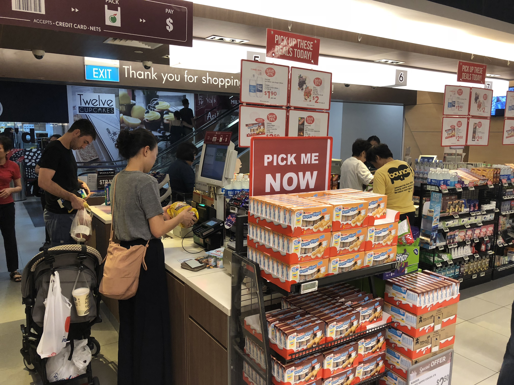
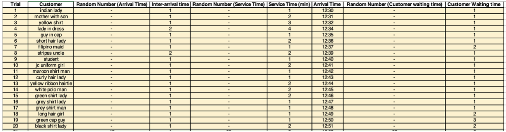
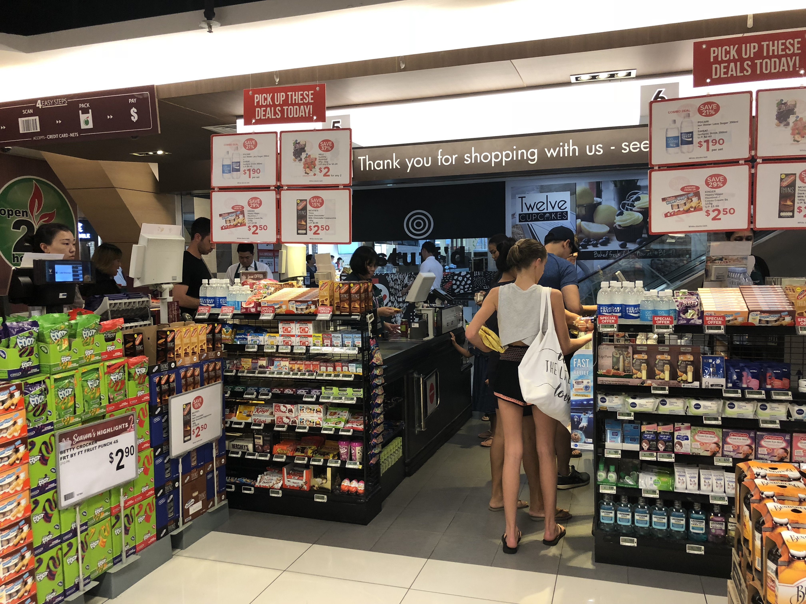
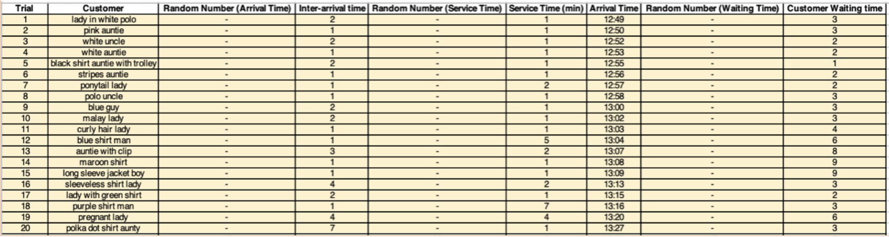

Data Collection
Data collection was done at a local supermarket, Cold Storage in Serangoon. We monitored 1 Cashier queue (with 1 server) and 1 Self-Checkout queue (with 1 server).
For each type of queue, we recorded the time at which each customer arrives at the queue and also the time at which the customer reaches the server and leaves the server. With this, we are able to calculate the inter-arrival time, service time and waiting time for each customer. (As shown in Table 1 and 2)
Photos of site and Data Collected

Image 1: Image of Self Checkout Counter

Table 1: Data collection table for self-checkout queue

Image 2: Image of Cashier Counter

Table 2: Data collection table for cashier queue